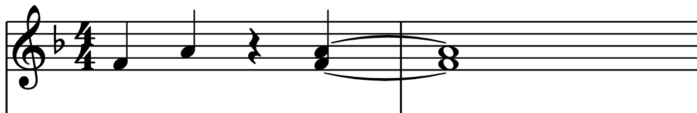
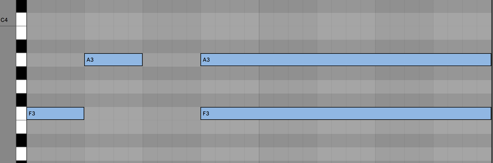
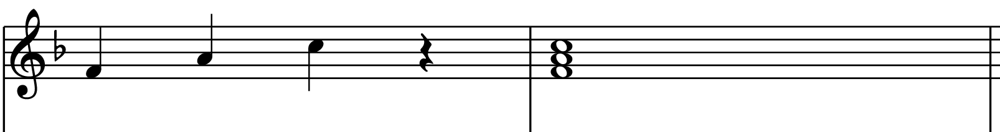
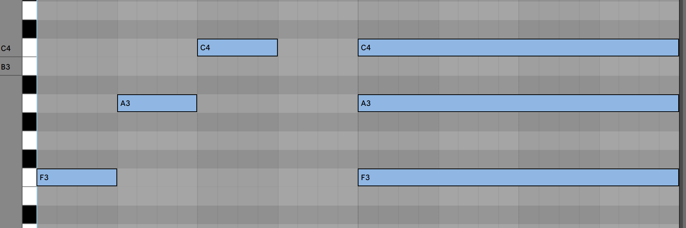

Each of these audio files is the same, except that the second tone (the major third) is tuned slightly differently.
Which of these audio clips sounds most out of tune?
Which of these audio clips sounds most in tune?
 Here are the same clips, with the fifth added to make a major chord.
 